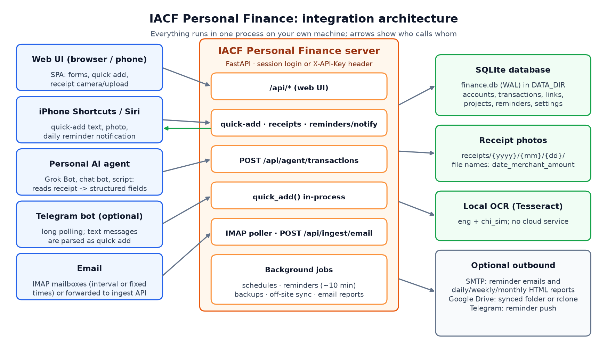
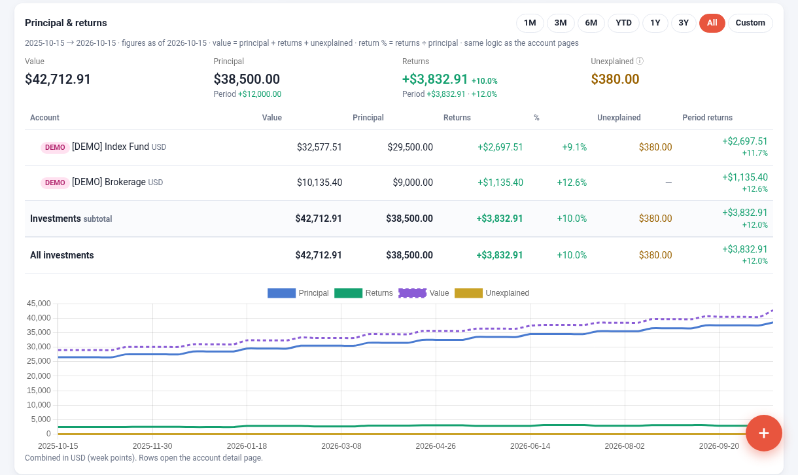
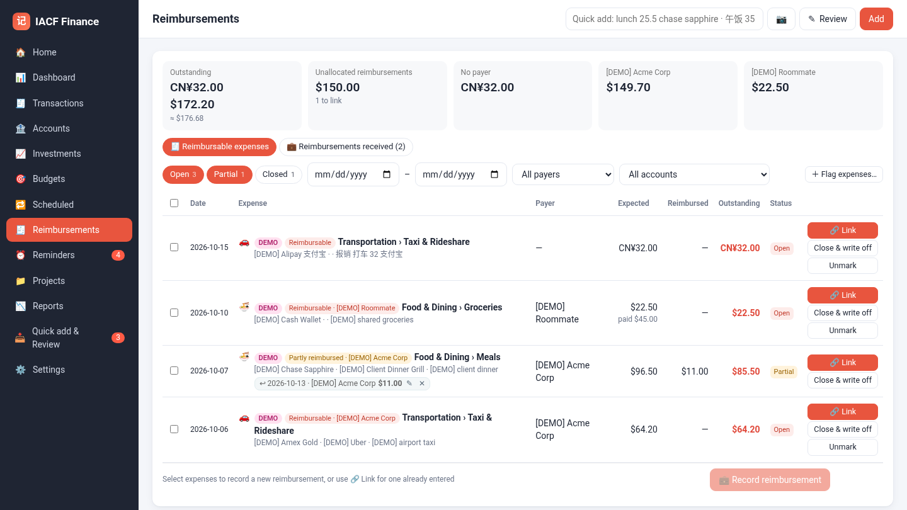
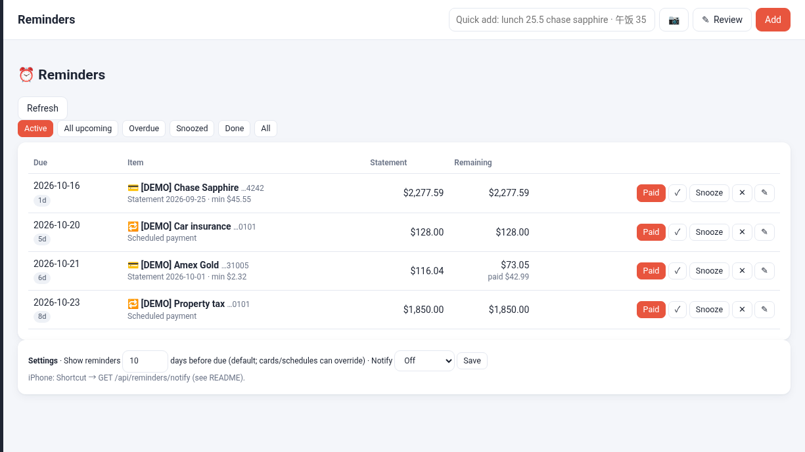
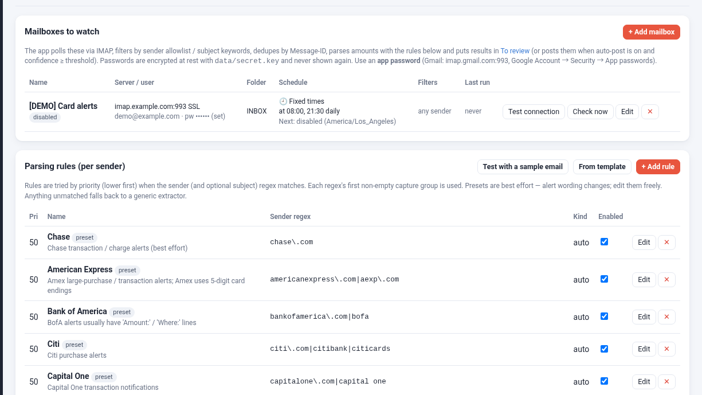

More Than an Expense Tracker: Meet IACF Personal Finance, a Self-Hosted Money Hub
Projects, reimbursements, investment returns, reminders and AI-agent capture, all running on your own machine.
Most budgeting apps answer one question: where did my money go? Real financial life asks harder ones. How much of my brokerage growth is my own contributions, and how much is actual return? Which work expenses has my employer paid back, and which are still outstanding? Is the trip still on budget? When is the next card payment due?
IACF Personal Finance is a self-hosted app built to answer those questions. It is inspired by the popular bookkeeping app Suishouji (随手记) and runs as a single FastAPI process with a SQLite database and a responsive web UI that also works on a phone. Your data stays on your own computer.
How it fits together

IACF Personal Finance architecture
Everything runs in one process. Inputs such as the web UI, iPhone Shortcuts, a personal AI agent, an optional Telegram bot and your email alerts all call the same API. The server writes to a local database and receipt folder, runs OCR locally, and only talks to the outside world (SMTP, Google Drive, Telegram) when you switch those features on.
What it does
- Everyday bookkeeping. Accounts in groups, multi-currency, two-level categories, budgets, dashboards, reports and CSV export, in English, 简体中文 and 繁體中文 (it follows your browser language). Quick add understands plain lines such as lunch 25.5 sapphire or 午饭 35 支付宝.
- Projects with a real plan. Give a trip or renovation named budget lines (Flights, Hotel, Meals…) and see planned vs. actual, by line and by category. Archive it when you're done.
- Reimbursement linking (报销). Flag expenses as reimbursable, then link them many-to-many to the money that comes back, with partial amounts. Expenses close automatically when they are fully repaid, or you can write off the rest. Reimbursed money never counts as your own spending, and reimbursements never count as income.
- Investment principal vs. returns. Each investment account's value is split into principal, returns and unexplained, with trend charts and money-weighted returns.
- Reminder Center. Credit card statement and due dates, scheduled bills and remind-only schedules, plus an endpoint an iPhone Shortcut can turn into a daily notification.
- Automatic transactions from email. IMAP mailboxes are checked every N minutes or at fixed times. Sender-based parsing rules (with bank presets) turn card alerts into transactions or into a review inbox.
- Receipt photo OCR. Snap or upload a receipt and local Tesseract OCR fills in the total, date, merchant, subtotal, tax and tip. Photos are filed by date.
- Agent API for AI bots. POST /api/agent/transactions accepts plain names and an optional receipt file, so a personal AI agent such as Grok Bot can log an expense from a photo. A built-in Telegram bot (optional) handles text quick add and reminder pushes.
- Tax & tips. Optional breakouts on every transaction, with their own report.
- Backups and emailed reports. Scheduled snapshots, incremental off-site backup of the database and receipts (e.g. to Google Drive), SMTP reminder emails and daily, weekly and monthly HTML reports.
- Self-hosted privacy. It binds to localhost by default, ships as a Windows zip with setup scripts, and never asks for bank credentials.
A closer look
Investments: what you put in vs. what it earned

Investments: principal vs returns
Contributions and returns are kept apart, so a 10% gain on the chart means 10% returns, not a deposit you made last month.
Reimbursement Center

Reimbursement Center with partial links
Outstanding totals by payer and currency, open, partial and closed states, and one-click linking with suggested matches.
Reminder Center

Reminder Center
Card statements show the statement balance, the minimum payment and what is still owed. They mark themselves done once your payments cover them.
Email monitoring and parsing rules

Email monitoring and parsing rules
Each mailbox can be checked on a fixed schedule. Rules can be tested against a sample email before you rely on them.
All screenshots use fabricated data.
Why self-hosted?
Financial data is some of the most personal data you have. IACF Personal Finance keeps the database, receipt photos and backups in one folder you control. OCR runs locally, and every outbound integration is opt-in. You get the automation people expect from cloud apps without handing your ledger to one.
Try it
If you track more than groceries (trips, work expenses, investment accounts, card due dates), I'd love your feedback. Repo and setup guide on GitHub: https://github.com/mdaxf/finance
What's the one money workflow you still run in a spreadsheet?